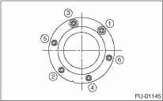

FUEL INJECTION (FUEL SYSTEMS)(H4DO) > Fuel Sub Level Sensor
Install in the reverse order of removal by adhering to the following procedures.
• Make sure the sealing portion is free from fuel or foreign matter before installation.
• Tighten the nuts and bolts to the specified torque in the order as shown in the figure.
NOTE:
Use a new gasket.
Tightening torque:
4.4 N·m (0.45 kgf-m, 3.3 ft-lb)
